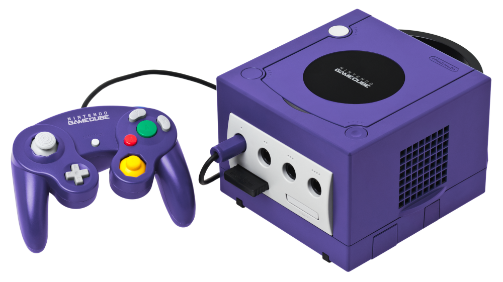

GameCube
R$100
O GameCube é o primeiro console da Nintendo a usar discos ópticos como meio de armazenamento principal.
Os discos são do formato miniDVD e o sistema não foi projetado para reproduzir DVDs ou CDs de áudio em
tamanho real, diferentemente de seus concorrentes, sendo focado em jogos.